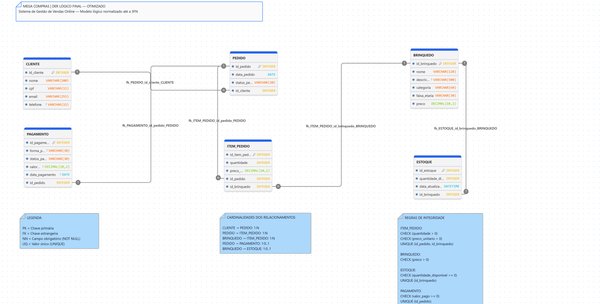

Entender o cenário
Definição do minimundo, objetivos e limites do sistema, com mapeamento de atores, processos e dados.
Sou Mariane Ferreira Santos, estudante de Gestão da Tecnologia da Informação. Aqui compartilho minha evolução em modelagem de dados, com interesse em análise de dados e programação.
Modelagem de banco de dados para um e-commerce de brinquedos: clientes, catálogo, pedidos, pagamentos e estoque organizados em uma estrutura relacional.
Definição do minimundo, objetivos e limites do sistema, com mapeamento de atores, processos e dados.
Detalhamento das seis entidades, atributos, chaves e cardinalidades, com documentação das suposições de projeto.
Análise da 1FN, 2FN e 3FN, revisão das dependências funcionais e documentação das regras de integridade.
CLIENTE, BRINQUEDO, PEDIDO, ITEM_PEDIDO, PAGAMENTO e ESTOQUE representam o núcleo do projeto. Abra o diagrama para ler os atributos e as anotações em tamanho original.

O preço atual do brinquedo fica separado do preço unitário do item do pedido. Assim, uma alteração no catálogo não muda o valor registrado em uma compra anterior.
ITEM_PEDIDO faz a ligação entre os pedidos e os brinquedos, registrando quantidade e preço unitário. A combinação de pedido e brinquedo é definida como única, conforme a regra adotada para o projeto.
Um pedido pode ter, no máximo, um registro de pagamento, e um brinquedo pode ter, no máximo, um registro de estoque. As regras adotadas permitem que esses registros ainda não existam.
A análise trabalhou atomicidade, dependências parciais e transitivas. A avaliação de chaves candidatas também é relevante: uma chave primária simples, isoladamente, não comprova a Segunda Forma Normal.
Durante o projeto, minhas principais dificuldades foram compreender as cardinalidades, relacionar as dependências funcionais à estrutura das tabelas e configurar as ferramentas de modelagem.
A prática me ajudou a organizar melhor as informações e a justificar decisões. Quero continuar aprofundando meus conhecimentos em SQL e normalização para desenvolver modelos com mais autonomia.
Acompanhe meu trabalho no GitHub ↗